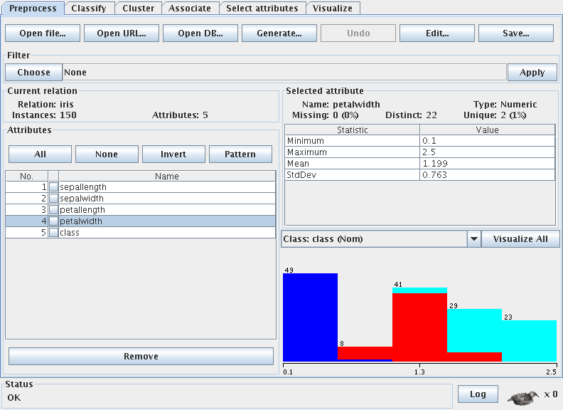
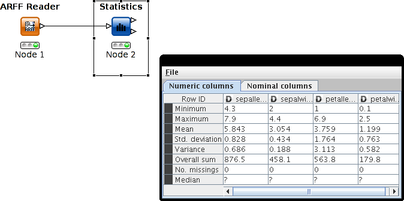
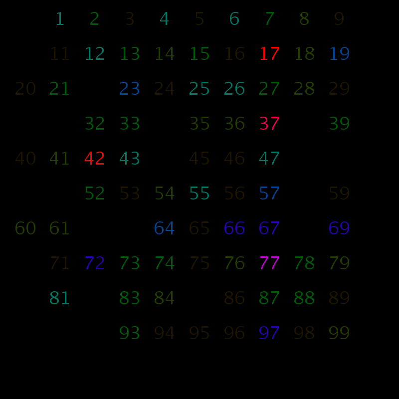

by Brandon Vargo
Data is the core of any data mining project. Before mining, however, the analyst must understand the types and quality of data in the dataset. There is no single "give me answers" algorithm in data mining; the choice of algorithm is dependent on the type and quality of the data. Ultimately, the analyst must look at the metadata (data about data) in addition to the data itself in order to get the most useful information from the dataset.
In general, elements of datasets can be separated into three main types: record data, sequential data, and graph-based data.
Record data consists of a fixed number of attributes and a variable number of records. This is analogous to a spreadsheet, where the columns may represent fixed attributes, and the values in each row consist of a particular entry. An example could include market basket data; in this example, the attributes are boolean attributes (true or false) that indicate whether a customer bought a particular item in a single transaction. The rows then consist of every transaction. Using this dataset, it is possible to see which items are bought together. Further, it is possible to extract association rules between various items. This could be used for improving sales by placing like items together. Other types of record data exist as well. For instance, the mushroom problem described in this portfolio has a record data dataset. Each attribute is a property of a type of mushroom. Each "row" in the dataset is a single species of mushroom.
Sequential data represents data collected over a period of time, also known as temporal data or time-series data, or is data collected over a given area, known as spatial data. For example, snowfall for a ski resort over a given season could be considered either temporal or spatial data, depending on what data is collected. If the data consists of the amount of snow that falls in a particular point over time, then the data is temporal data. If the data consists of the amount of snowfall overnight at twelve different locations across the mountain, then the data is spatial data. If the data consists of the amount of snowfall oat twelve different locations for an entire season, then the data is both temporal and spatial.
Graph-based data represents vertices and edges in the data such that the data forms a graph. One example of graph-based data is in chemistry, where molecules are represented as graphs. The individual atoms of the molecule are the vertices; the edges are the bonds between the atoms.
The boolean attribute type was introduced above, when describing marketbasket data. Binary data is by no mean the only type of attribute that a record may have. In general, there are four primary categories of attribute types: nominal, ordinal, interval, and ratio.
Nominal data is data that consists of a name that is applied to a record. For instance, couches may have a color of red, green, or blue. There is no order to these value, but the couch can be partially described by the color. A binary attribute is a special class of nominal data where there are only two choices: true and false. For instance, is_red may be a binary attribute for a couch.
Ordinal data adds an ordering to nominal data. For instance, couches may have a shade of light, medium, or dark. There is an ordering to these three possible values, but there is no numerical value attached to the ordering. For example, a dark red couch would have the shade set to dark and color set to red. This is considered "further away" from a light red couch than a medium couch.
Interval data adds numerical data to nominal data, so that differences between two values of the same attribute have meaning. Continuing with the couch example, perhaps the shade of the couch is rated on a scale of 1-10 by a jury of couch experts, where 1 is darkest and 10 is lightest. Now, the differences between two shades can be calculated. If the previous ordinal attributes were classified as light=1, medium=5, and dark=10, then it is possible to compare how far a dark couch is from a light couch in comparison to a dark couch with a medium couch. However, it is not meaningful to say that one couch is twice as dark as another couch, as the rating scale is arbitrarily define. Another example of interval data is temperature measurements in Fahrenheit or Celsius.
Ratio data adds meaning to the ratios of differences. For instance, instead of relying on couch experts to rate the darkness of couches, perhaps a digital meter is used to determine the absolute shade of a couch. This could be accomplished by using the value component of a HSV (hue saturation value) color code. In this system, 0 could represent the absolute darkest shade of black; 255 could represent the absolute lightest shade of white. Now, it is meaningful to say that one couch is twice as dark as another, since the shade attribute is on an absolute scale. As related to temperature, Kelvin is a ratio measurement.
Data quality is a large concern when mining a dataset. Data may have missing attributes, outliers, duplicates, or noise artifacts. The original data collection could have also been skewed in some way. It is paramount that the analyst take these possible factors into account when using algorithms and interpreting results.
These issues can be handled in multiple ways. The easiest way to handle missing attributes, especially if there is a lot of data and the number of missing attributes is small, is to remove the records missing attributes. This works best when the total amount of data is large, because then the statistical significance of the data is not undermined.
Outliers and noise points can be handled in a similar manner to missing attributes. If finding outliers is not the main goal of the mining, for example in fraud detection, then these points can often be removed when performing an analysis. However, the results should be considered when looking at the final results of an algorithm output in order to ensure that the outliers would not have affected the outcome significantly.
Exploring the data through summary statistics is important in order to analyze basic statistics and guide the mining process. Statistics such as min, max, and quartiles (including median) can help identify outliers that might be removed early in the process. Other information such as the variance, standard deviation, and mode can help identify the "shape" of the data, which might alter the algorithms used or suggest a filter to use when mining the data. For instance, if 90% of the records contain an attribute, then it may be more meaningful to remove that attribute while performing association analysis.
For example, here are some summary statistics for the IRIS dataset:
Summary Statistics:
Min Max Mean Stdev Class Correlation
sepal length: 4.3 7.9 5.84 0.83 0.7826
sepal width: 2.0 4.4 3.05 0.43 -0.4194
petal length: 1.0 6.9 3.76 1.76 0.9490
petal width: 0.1 2.5 1.20 0.76 0.9565
Here are screenshots from two data mining tools, Weka and Knime, showing summary statistics.
 According to Tufte, visualizing data is almost as important than the data itself. Good visualizations can provide a good overall "feeling" of the data without having to perform a large mining analysis, or it can cause the analysis to confirm a result.
For example, the following diagram shows the frequency of numbers chosen for a group of people asked to chose "random" numbers. The colors and shade of the number reflect the frequency with which the numbers are chosen. The image shows that numbers ending in 7 are more popular, and there are several other popular numbers, such as 42. The "random" numbers are not uniformly distributed at all. The image was created using Processing.
